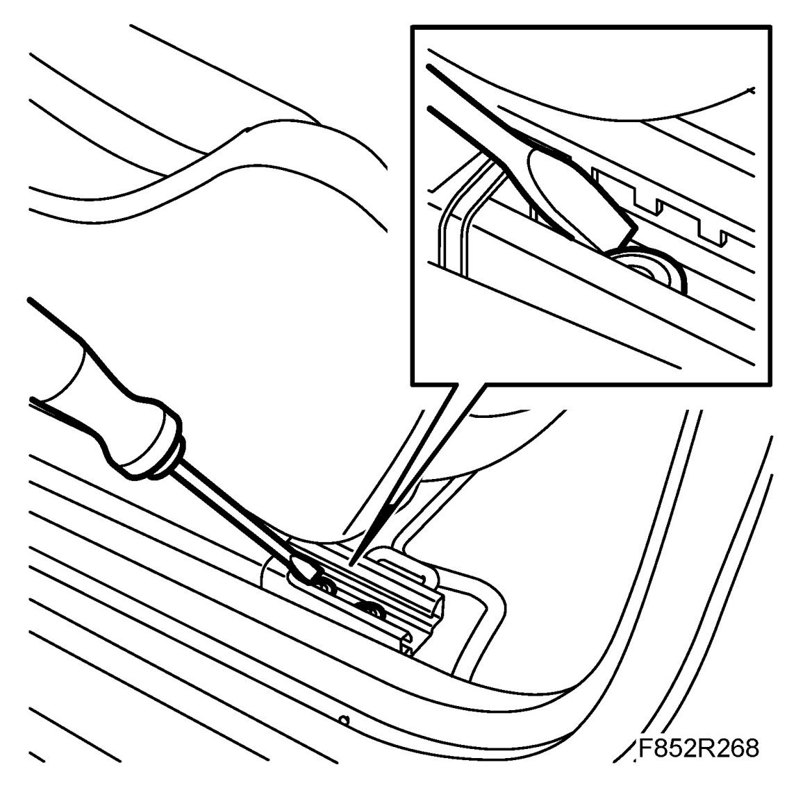
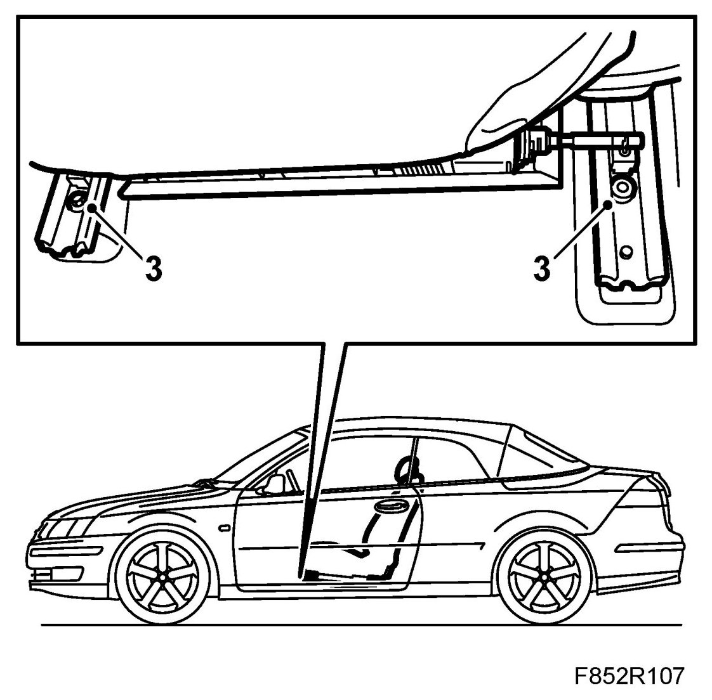
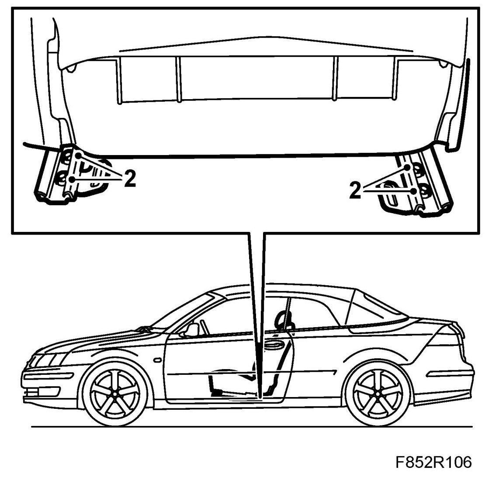
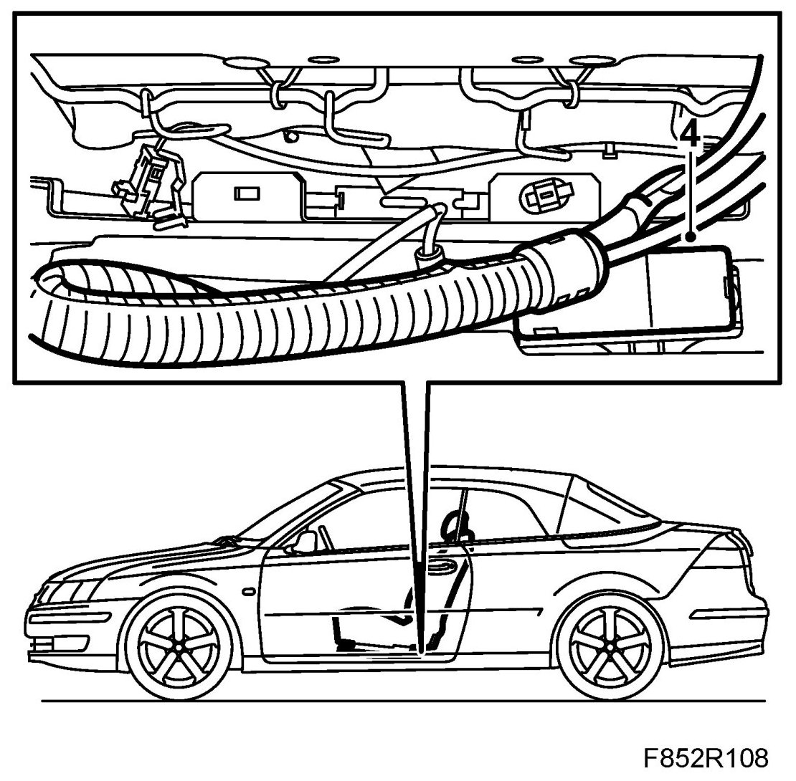
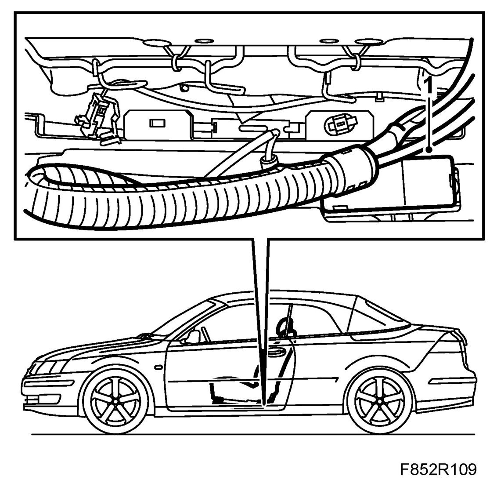
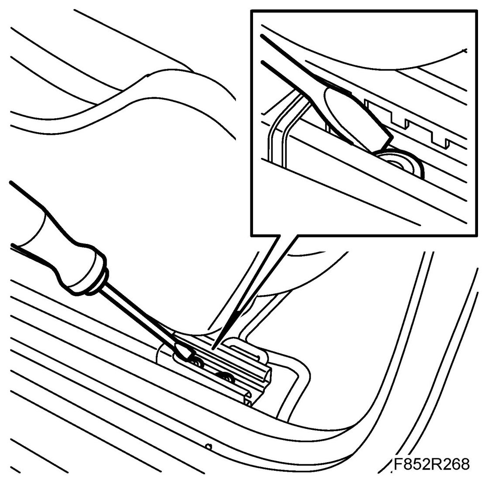
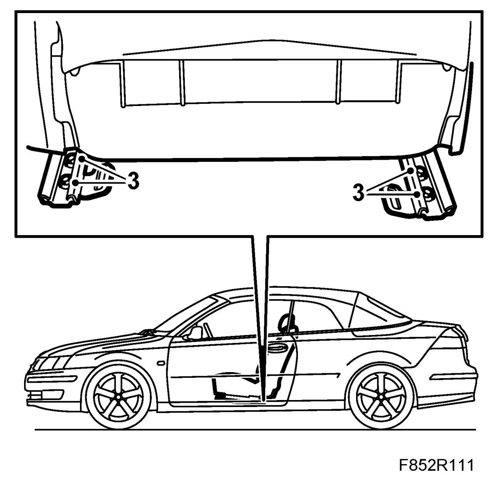

Front Seat, CV
Front Seat, CV
To remove
NOTE: The seat is heavy.
1. Retract the soft top.
Move the seat to its rear and highest position.
IMPORTANT: Cars with electrically operated seats: To access the front bolt, the seat must be blocked at the rear bolt. This done by holding a screwdriver at the seat's rear bolt while moving the seat back towards the bolt for a few seconds.

2. Remove the front screws which secure the seat's rails.

3. Move the seat to its forward position, and remove the rear screws holding the seat rails.

4. Turn the ignition key to OFF. Remove the seat connector and lift out the seat.

To fit
1. Position the seat and connect the seat connector.

Fit the rear screws. Use 74 96 268 Thread locking adhesive. Do not tighten the screws completely.
IMPORTANT: Cars with electrically operated seats: To access the front bolt, the seat must be blocked at the rear bolt. This done by holding a screwdriver at the seat's rear bolt while moving the seat back towards the bolt for a few seconds.

2. Move the seat to its rear position, and fit the front screws. Use 74 96 268 Thread locking adhesive.
Tightening torque: 34 Nm (25 lbf ft)
3. Move the seat to its front position and tighten the rear screws.
Tightening torque: 34 Nm (25 lbf ft)

4. Cars with electrically adjustable seat: Check with the diagnostic tool as follows:
Connect the diagnostic tool to the data link connector under the dashboard.
Delete any fault codes.
Turn off the ignition and turn it on again. Wait for at least 1 minute with the ignition on.
Check whether a diagnostic trouble code is displayed:
If a diagnostic trouble code is shown:
Carry out fault diagnosis according to the instructions under respective trouble codes.
If a diagnostic trouble code is not shown:
The assembly was successful. Disconnect the diagnostic tool.
5. Close the soft top.